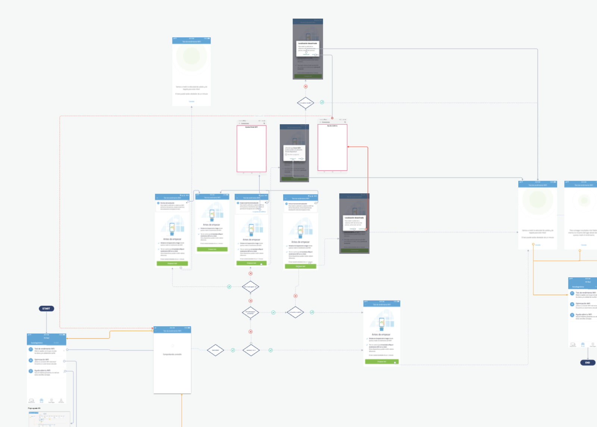
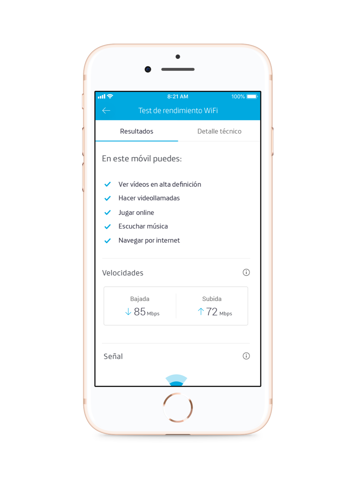
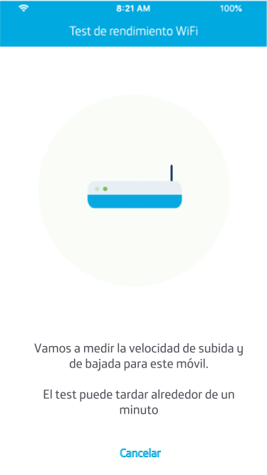

Designing for
a wait that
could not be shortened
The work at Movistar
Three products.
Three different design challenges.
Two years at frog for Telefónica, across web, mobile and television. This case follows the second one all the way down.
01 · Web
Conexión Segura

Security self-service dashboard
Business goal
Increase service activation and improve service management.
02 · Mobile · iOS + Android
Smart WiFi Selfcare

Connectivity diagnosis and self-service
Business goal
Increase self-service and reduce calls to 1002.
03 · TV · Remote · Voice
Living Apps

TV experiences and partner-built Living Apps
Business goal
Enable Telefónica partners to create and update Living Apps more independently.
The context
An app tied
to a physical
router
Smart WiFi is a mobile app that lets Movistar customers set up their router, change the WiFi password and share their connection. Selfcare was a new feature inside it: help people diagnose and resolve their own connectivity problems.
The business goal was direct: encourage self-service and reduce support calls. Every problem a customer could solve alone was a call the operator did not have to take.
What made it hard is that the app is bound to real hardware in someone's home. The behaviour of the product depended on the router, the network, and on differences between iOS and Android that we did not control.

02 · The challenge
The diagnostic test was slow, and no amount of design was going to make it faster.
Running a real performance test against a home network takes as long as it takes. That was a technical fact, not a design problem I could solve.
Which meant the actual problem was not duration. It was what a person believes is happening while they wait, and whether they stay with the process instead of abandoning it and calling support, which was precisely the outcome the feature existed to avoid.
A spinner would have been honest and useless. The design had to make the wait legible: something is happening, this is what it is, you are still in control of it.

My role
Designing inside
the constraints,
not around them
I was the UX designer on the feature, working within Movistar's existing design system and alongside the engineering team building it.
The method that mattered: I brought a wireflow to every grooming session. Not a finished design for approval, a working flow that engineering could break, so that technical reality and product requirements shaped it while it was still cheap to change.
That is how the edge cases got mapped. Not by documenting them afterwards, but by designing in the room where they surfaced.
- 01End-to-end interaction and navigation flow for the Selfcare feature
- 02Edge-case mapping with engineering across iOS and Android
- 03Motion design for the diagnostic sequence, to make waiting legible
- 04A set of original illustrations for the help and FAQ content
- 05Final designs delivered within the Movistar design system
The work
Two problems,
two languages
Motion, for the part you wait through
The diagnostic sequence was designed as visible stages rather than a single indeterminate load. Each stage names what the system is doing, so the passing time reads as progress rather than as absence. The goal was never to disguise the duration. It was to make it comprehensible.
Illustration, for the part you read
A large part of Selfcare is explanatory content: why your connection behaves the way it does, what you can do about it. I created a set of illustrations so each topic was recognisable at a glance, turning a help section people avoid into something they could actually navigate.

Outcome
People diagnosed
their own
connection
The feature let customers analyse their own connectivity without calling for assistance, which was the point of building it, and the measure the business cared about.
For a support organisation, a customer who resolves their own problem is not only a cost avoided. It is a customer who did not spend twenty minutes on hold being told to restart the router.
What I took from it
Three things
I kept
Some constraints are the brief
The test was slow and would stay slow. Accepting that early moved the problem from speed to comprehension, and comprehension was solvable. Arguing with a technical fact wastes the time you could spend designing around it.
Design in the room where reality lives
Bringing a wireflow to every grooming meant edge cases surfaced while the design was still cheap to change. A flow engineering can break is worth more than a comp they can only approve.
Waiting is an experience, not a gap
People will stay with a slow process they understand and abandon a fast one they do not. Control is what holds attention, and it can be designed.